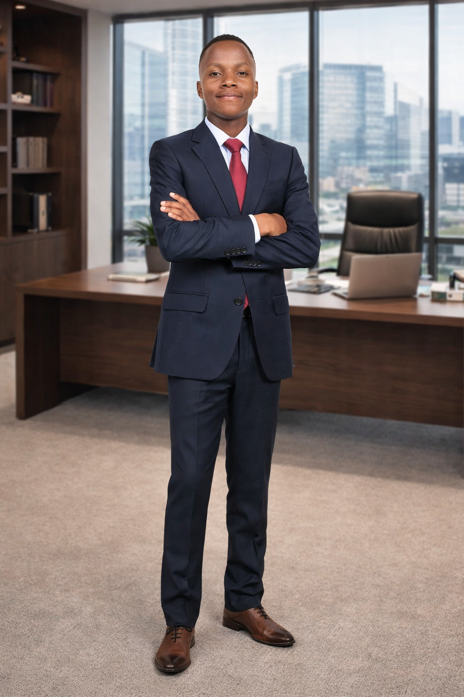

Founder & CEO of Infinite Cyberspace — Leading with Vision, Integrity, and Innovation

I’m Augustine Ouma, founder and CEO of Infinite Cyberspace — a forward-thinking cybersecurity and IT solutions hub based in Kisumu County. My journey began with a passion for technology and a vision to empower businesses through secure, intelligent digital systems.
With a background in IT and cybersecurity, I focus on building resilient infrastructures that protect data, enhance productivity, and inspire trust. I believe leadership means innovation, mentorship, and integrity — values that guide every project I lead.
Beyond technology, I’m committed to nurturing young talent and promoting digital literacy across Kenya, helping the next generation thrive in a connected world.
Vision: To create a secure digital ecosystem where businesses thrive confidently in the age of cyber threats.
Mission: To deliver innovative IT solutions, empower communities with digital literacy, and mentor future leaders in technology and cybersecurity.